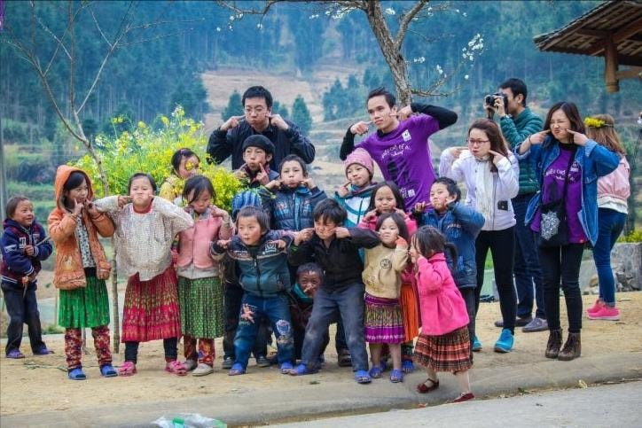

VOLUNTEER TOURISM

Volunteer tourism allows travelers to combine travel with meaningful community service, helping local communities and environmental projects.
2. Environmental Conservation
Participate in programs that protect Vietnam’s natural landscapes and promote sustainability.
| Nature Protection Activities |
Clean-Up Campaigns |
| Engage in tree planting, wildlife conservation, and habitat restoration to preserve ecosystems and biodiversity. |
Join beach, river, and urban cleanups while raising environmental awareness and promoting sustainable practices. |
3. Teaching and Cultural Exchange
Volunteer in educational programs while immersing yourself in local culture.
| Educational Assistance |
Cultural Interaction |
| Assist in schools by teaching English, organizing educational games, and mentoring children to enhance learning opportunities. |
Engage in cultural exchange, sharing skills and traditions with locals while gaining a deeper understanding of Vietnamese society. |
4. Sustainable Tourism Impact
Volunteer tourism encourages responsible travel and long-term community benefits.
| Responsible Travel |
Long-Term Community Benefits |
| Encourages visitors to engage ethically, respect local cultures, and make meaningful contributions during their stay. |
Supports sustainable development projects, fosters community resilience, and strengthens connections between travelers and locals. |
Volunteer tourism in Vietnam offers an enriching opportunity to explore the country while making a positive social and environmental impact.